Oritech
共 336 个条目 · oritech
版本: 1.2.10 · 来源: oritech-neoforge-1.21.1-1.2.10.jar
Simple tech mod.
MC百科页面: https://www.mcmod.cn/class/15500.html（Oritech）
官方介绍 （Modrinth · 中文版由 GLM AI 翻译，仅供参考）
Oritech 是一款开源科技模组（目前支持 Minecraft 26.1.2），加入了大量新机器与工具。内容涵盖加工机器、世界交互机器、物流部件、融入世界生成的新特性、装备等等。机器大多是带动画的多方块结构，升级则通过附加（addon）方块来实现。
你可以在 moddedmc.org 上在线查阅 Wiki，也可以通过 Oracle Index 模组查看。 兼容 JEI、REI 和 EMI，与 EMI 配合使用效果最佳。
功能亮点 ✨
- 多种矿石处理链/变体
- 自动化农业机器
- 电动工具与盔甲
- 物品、流体与能量管道
- 可远距离运输物品的无人机
- 可自动挖掘方块的激光
- 可染色的机器
- 玩家赛博义体强化
- 粒子加速器！
- 全新装饰内容，包括连通纹理与动画门
- 多样的发电方式，从燃烧化石燃料到建造可持续的生物燃料农场
- 丰富的配置选项，并集成了 Mod Menu
内置对以下模组的额外兼容（允许在 Oritech 机器中加工这些模组的金属及其他材料，反之亦然）：
Fabric
- Alloy Forgery
- Clutter
- Energized Power
- Mythic Metals
- Tech Reborn
Neoforge
- Actually Additions
- Applied Energistics 2
- Create
- Ender IO
- Energized Power
- Immersive Engineering
- Industrial Foregoing
- Mekanism（及 Mekanism Generators）
- PneumaticCraft: Repressurized
- Powah!
- Productive Metalworks
本模组提供以下语言版本： - 英语 - 中文（由 PlatinumOak 提供） - 巴西葡萄牙语（由 RenanEuzebio 提供） - 俄语（由 nuchohent 提供） - 乌克兰语（由 nuchohent 提供） - 西班牙语（由 Seyronh 提供） - 土耳其语（由 RuyaSavascisi 提供） - 法语（由 kikipunk 提供） - 德语（由 Wolkensteinchen 提供） - 波兰语（由 plhappylemonpl 与 Przemol 提供）
简短展示 🎥
补充信息 ℹ️
本模组的核心设计理念之一，是让模组中的每种东西都有多种获取途径。例如，塑料既可以用农产品来生产，也可以通过石油加工获得。这一理念贯穿模组的绝大部分内容。其目标是避免那种“必须先拿到某件稀有而特定的物品才能继续推进”的恼人卡点——通常一件事总有多种完成方式（不过在当前的测试版本中，这一点并不总能做到）。
另一个设计目标是让大多数东西都拥有可再生来源。这包括燃料和物品，它们可以通过建造大型自动化农场来获取。到了游戏后期，金属可以通过基岩抽取器获得，从而变成“可再生”资源。要让这一切运转起来，玩家需要建立大型基地和完整的处理链。世界中自然生成的基岩抽取器资源节点以及油井，就是为了鼓励玩家修建辅助基地，再将物资运往中央枢纽。
Oritech 的所有部分在设计时都高度重视简洁与性能。管道方块只在必要之处（例如连接机器时）才拥有实体，所有网络都会被缓存，网络更新只在需要时发送。只要有可能，一切都会被预计算或缓存。
管道的速度普遍相当快，而且每种类型只有 1 个等级。
致谢 🙏
本模组深受最初的 Techarium 模组启发——遗憾的是，该模组至今尚未发布可玩的版本。许多机器的名称和模型直接取自 Techarium，或深受其启发。特别感谢 Techarium 的原班开发者（YCar、Gecko 以及所有参与者）创造了这些素材与创意，并以 CC BY-NC 4.0 DEED 许可证将其公开。
部分方块和物品材质同样来自 malcolmriley 的 unused-textures 仓库。同样非常感谢他将这些素材公开（以 CC BY 4.0 DEED 许可证发布）。
具体来说，以下内容来自上述来源： * 来自 ArtOfTecharium（动画和材质经过了少许修改，例如添加了附加接口等） * 装配机模型 * 铸造厂模型 * 激光臂模型 * 电动熔炉模型 * 能量接收器模型 * 机器扩展器材质 * 外骨骼模型 * 深层钻机模型 * 吸顶灯 * 科技门、拉杆、按钮 * 来自 malcolmriley 的 unused-textures 仓库 * 石油流体材质（深色气体材质） * 大部分合成组件材质
特别鸣谢
- Arky the PizzaRaccoon，绘制了大部分金属锭材质
- Ridanisaurus Rid，绘制了几乎所有非金属组件材质
- Kekie6，制作了能量管道和大型太阳能板模型
- glisco，owo-lib 的作者，打造了这款出色的库并在使用上提供支持
- unilock，完成了 EMI 集成的大部分工作
- Geckolib 的创作者与维护者们，打造了优秀的动画引擎，并在他们的 Discord 中答疑解惑
- Ycar，绘制了全部等级的机器核心材质
- BBoldt 与 BLOKBUSTR，提供了大部分金属物品变体材质
- jshipley，在新特性、方块、机制和 bug 修复方面做出了大量贡献
- CrazyMiner34，改进了第三人称物品渲染并绘制了扳手材质
- NovaKatt，绘制了大部分金属块/压缩块材质
- Armen，让管道可以用扳手进行配置，并带来了更多改进
- Relentless，将项目迁移到 Mojang 映射并协助 Maven 发布
由 GLM AI 翻译，仅供参考
查看英文原文（Modrinth）
Oritech is an open-source tech mod (currently for Minecraft 26.1.2), featuring many new machines and tools. Content ranges from processing machines, world interaction machines, logistical parts, new features integrated into world generation, equipment, and more. Machines are mostly animated multiblocks, with upgrades being implemented using addon blocks.
A wiki is available online on moddedmc.org or via the Oracle Index mod. Includes JEI, REI and EMI compatibility. Works best with EMI.
Features include ✨
- Multiple ore processing chains / variants
- Automated farming machines
- Electric tools and armor
- Item, fluid and energy pipes
- Drones to transport items across vast distances
- Lasers to automatically mine blocks
- Colorable machines
- Cybernetic Player augmentation
- Particle Accelerators!
- New decorative content, included connected textures and animated doors
- Diverse energy generation methods, from burning fossil fuels to creating sustainable farms for biofuel
- Extensive configuration options, and Mod Menu integration
Extra mod compatibilities (allowing metals and other components to be processed in Oritech machines, and vice-versa) for the following mods are included:
Fabric
- Alloy Forgery
- Clutter
- Energized Power
- Mythic Metals
- Tech Reborn
Neoforge
- Actually Additions
- Applied Energistics 2
- Create
- Ender IO
- Energized Power
- Immersive Engineering
- Industrial Foregoing
- Mekanism (and Mekanism Generators)
- PneumaticCraft: Repressurized
- Powah!
- Productive Metalworks
The following translations are available: - English - Chinese (by PlatinumOak) - Brazilian Portuguese (by RenanEuzebio) - Russian (by nuchohent) - Ukrainian (by nuchohent) - Spanish (by Seyronh) - Turkish (by RuyaSavascisi) - French (by kikipunk) - German (by Wolkensteinchen) - Polish (by plhappylemonpl & Przemol)
Small showcase 🎥
Additional information ℹ️
One of the main design ideas is to have multiple ways to get things in the mod. For example, plastic can either be produced using farming items or via oil processing. The same philosophy is applied to most of the mod. The goal is to avoid annoying roadblocks where you need one rare and specific item to proceed. Instead, there are usually multiple ways to get something done (although in this test release this isn't always the case).
Another design goal is to have renewable sources for most things. This includes fuel and items, which can be gained by building large automated farms. Metals can be gained by using the bedrock extractor and gaining "renewable" metals in the late game. Getting those up and running requires players to set up large bases and processing chains. The naturally spawned resource nodes for the bedrock extractors, and also the oil wells are there to incentivize players to build auxiliary bases and then transport items to a central hub.
All parts of Oritech are heavily designed with simplicity and performance in mind. Pipe blocks only have entities where needed (e.g. when connecting to machines), and all networks are cached. Network updates are only sent when needed. Where possible, everything is precomputed or cached.
Pipes are generally pretty fast, and there is only 1 pipe tier for each type.
Credits 🙏
This mod is heavily inspired by the original Techarium mod, which sadly hasn't been released in a playable version yet. A lot of the machine names and models were taken or strongly inspired by Techarium. Huge thanks to the original techarium devs (YCar and Gecko and everyone else involved) for creating the assets and ideas, and also for making them available under the CC BY-NC 4.0 DEED license.
Some blocks and item textures are also from malcolmriley's unused-textures repository. Huge thanks to him for making those available as well (under the CC BY 4.0 DEED license).
In detail, these are the following items that are from the above-mentioned sources: * From ArtOfTecharium (animations and textures were slightly modified, e.g. addon ports added, etc.) * Assembler Model * Foundry Model * Laser Arm Model * Powered Furnace Model * Energy Acceptor Model * Machine Extender Texture * Exosuit Model * Deep Drill Model * Ceiling Lights * Tech Door, Lever, Button * From malcolmriley's unused-textures repo * Oil fluid textures (the dark gas texture) * Most of the crafting component textures
Acknowledgements
- Arky the PizzaRaccoon, for creating most of the metal ingot textures
- Ridanisaurus Rid, for creating almost all the non-metal component textures
- Kekie6, for creating the energy pipe and big solar panel models
- glisco, the creator of owo-lib, for creating this awesome library and supporting in its usage
- unilock, for providing most of the work on the EMI integration
- The creators and maintainers of Geckolib for creating the great animation engine, and helping out in their discord
- Ycar, for creating all tiers of the machine core textures
- BBoldt and BLOKBUSTR, for providing most of the metal item variant textures
- jshipley, for a lot of contributions with new features, block, mechanics and bugfixes
- CrazyMiner34, for improvements to item rendering in 3rd person & the wrench texture
- NovaKatt, for creating most of the metal / compacted block textures
- Armen, for making the pipes configurable with the wrench and some more improvements
- Relentless, for migrating the project to Mojang mappings and help with Maven publishing
资料来源：Oritech
物品与方块
 粒子加速器
粒子加速器oritech:accelerator_controller · 方块
 粒子加速器直线型马达
粒子加速器直线型马达oritech:accelerator_motor · 方块
 粒子加速器导向环
粒子加速器导向环oritech:accelerator_ring · 方块
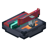
粒子加速器传感器oritech:accelerator_sensor · 方块
 精镍块
精镍块oritech:adamant_block · 方块
 精镍粉
精镍粉oritech:adamant_dust · 物品
 精镍锭
精镍锭oritech:adamant_ingot · 物品插件指示器
oritech:addon_indicator_block · 方块
 量子研究站
量子研究站oritech:advanced_augment_station · 方块
 高级电池
高级电池oritech:advanced_battery · 物品
 高级计算引擎
高级计算引擎oritech:advanced_computing_engine · 物品
 奥术研究站
奥术研究站oritech:arcane_augment_station · 方块
 装配器
装配器oritech:assembler_block · 方块
 原子锻造器
原子锻造器oritech:atomic_forge_block · 方块
 赛博改造中心
赛博改造中心oritech:augment_application_block · 方块
 香蕉
香蕉oritech:banana · 物品?香蕉块
oritech:banana_block · 方块
 基础电池
基础电池oritech:basic_battery · 物品
 基础发电机
基础发电机oritech:basic_generator_block · 方块
 大型太阳能电池板
大型太阳能电池板oritech:big_solar_panel_block · 方块
 生物质能发电机
生物质能发电机oritech:bio_generator_block · 方块
 生物质
生物质oritech:biomass · 物品
 生物质块
生物质块oritech:biomass_block · 方块
 有机钢块
有机钢块oritech:biosteel_block · 方块
 有机钢粉
有机钢粉oritech:biosteel_dust · 物品
 有机钢锭
有机钢锭oritech:biosteel_ingot · 物品
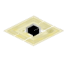
黑洞oritech:black_hole_block · 方块
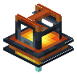
方块破坏器探头oritech:block_destroyer_head · 方块
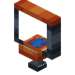
方块施肥器探头oritech:block_fertilizer_head · 方块
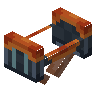
方块放置器探头oritech:block_placer_head · 方块
 迷彩机器涂料
迷彩机器涂料oritech:camo_paint · 物品
 储能扩展坞
储能扩展坞oritech:capacitor_addon_extender · 方块
 碳纤维
碳纤维oritech:carbon_fibre_strands · 物品
 碳强化护板
碳强化护板oritech:carbon_plating_block · 方块
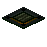
碳强化护板压力板oritech:carbon_plating_pressure_plate · 方块
 碳强化护板台阶
碳强化护板台阶oritech:carbon_plating_slab · 方块
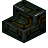
碳强化护板楼梯oritech:carbon_plating_stairs · 方块
 工业壁灯
工业壁灯oritech:ceiling_light · 方块
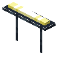
吊灯oritech:ceiling_light_hanging · 方块
 离心机
离心机oritech:centrifuge_block · 方块
 链锯
链锯oritech:chainsaw · 物品
 装备充能器
装备充能器oritech:charger_block · 方块
 黏土催化剂
黏土催化剂oritech:clay_catalyst_beads · 物品
 煤粉
煤粉oritech:coal_dust · 物品
 工业冷却器
工业冷却器oritech:cooler_block · 方块铜碎块
oritech:copper_clump · 物品
 铜粉
铜粉oritech:copper_dust · 物品
 铜石
铜石oritech:copper_gem · 物品铜粒
oritech:copper_nugget · 物品
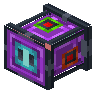
创造能量存储oritech:creative_storage_block · 方块
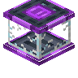
创造储罐oritech:creative_tank_block · 方块
 作物过滤器插件
作物过滤器插件oritech:crop_filter_addon · 方块
 基岩层钻机
基岩层钻机oritech:deep_drill_block · 方块
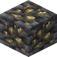
深层镍矿石oritech:deepslate_nickel_ore · 方块
 深层铂矿石
深层铂矿石oritech:deepslate_platinum_ore · 方块
 深层铀矿石
深层铀矿石oritech:deepslate_uranium_ore · 方块
 方块破坏器
方块破坏器oritech:destroyer_block · 方块
 钻石机器涂料
钻石机器涂料oritech:diamond_paint · 物品
 无人机港
无人机港oritech:drone_port_block · 方块
 可疑的容器
可疑的容器oritech:dubios_container · 物品
 昶铂块
昶铂块oritech:duratium_block · 方块
 昶铂粉
昶铂粉oritech:duratium_dust · 物品
 昶铂锭
昶铂锭oritech:duratium_ingot · 物品
 电动重锤
电动重锤oritech:electric_mace · 物品
 琥珀金块
琥珀金块oritech:electrum_block · 方块
 琥珀金粉
琥珀金粉oritech:electrum_dust · 物品
 琥珀金锭
琥珀金锭oritech:electrum_ingot · 物品
 稳定附魔器
稳定附魔器oritech:enchanter_block · 方块
 奥术触媒
奥术触媒oritech:enchantment_catalyst_block · 方块
 末影化合物
末影化合物oritech:enderic_compound · 物品
 末影透镜
末影透镜oritech:enderic_lens · 物品
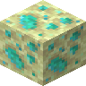
末地铂矿石oritech:endstone_platinum_ore · 方块
 辐镍晶块
辐镍晶块oritech:energite_block · 方块
 辐镍晶粉
辐镍晶粉oritech:energite_dust · 物品
 辐镍晶锭
辐镍晶锭oritech:energite_ingot · 物品
 能量线缆
能量线缆oritech:energy_pipe · 方块能量线缆连接点
oritech:energy_pipe_connection · 方块
 集装能量线缆
集装能量线缆oritech:energy_pipe_duct_block · 方块
 外骨骼靴子
外骨骼靴子oritech:exo_boots · 物品
 外骨骼胸甲
外骨骼胸甲oritech:exo_chestplate · 物品
 外骨骼头盔
外骨骼头盔oritech:exo_helmet · 物品
 外骨骼喷气背包
外骨骼喷气背包oritech:exo_jetpack · 物品
 外骨骼护腿
外骨骼护腿oritech:exo_leggings · 物品
 方块施肥器
方块施肥器oritech:fertilizer_block · 方块?细导线
oritech:fine_wire · 物品
 流体管道
流体管道oritech:fluid_pipe · 方块
 流体管道连接点
流体管道连接点oritech:fluid_pipe_connection · 方块
 集装流体管道
集装流体管道oritech:fluid_pipe_duct_block · 方块
 磁通门
磁通门oritech:flux_gate · 物品
 辐水晶
辐水晶oritech:fluxite · 物品
 辐水晶块
辐水晶块oritech:fluxite_block · 方块
 辐水晶机器涂料
辐水晶机器涂料oritech:fluxite_paint · 物品
 铸造器
铸造器oritech:foundry_block · 方块
 粉碎工厂
粉碎工厂oritech:fragment_forge_block · 方块
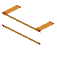
框架机架臂oritech:frame_gantry_arm · 方块
 带框架的能量线缆
带框架的能量线缆oritech:framed_energy_pipe · 方块
 带框架的物流管道连接点
带框架的物流管道连接点oritech:framed_energy_pipe_connection · 方块
 带框架的流体管道
带框架的流体管道oritech:framed_fluid_pipe · 方块
 带框架的流体管道连接点
带框架的流体管道连接点oritech:framed_fluid_pipe_connection · 方块
 带框架的物流管道
带框架的物流管道oritech:framed_item_pipe · 方块
 带框架的物流管道连接点
带框架的物流管道连接点oritech:framed_item_pipe_connection · 方块
 带框架的超导体
带框架的超导体oritech:framed_superconductor · 方块
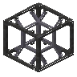
带框架的超导体连接点oritech:framed_superconductor_connection · 方块
 燃料发电机
燃料发电机oritech:fuel_generator_block · 方块金碎块
oritech:gold_clump · 物品
 金粉
金粉oritech:gold_dust · 物品
 金石
金石oritech:gold_gem · 物品
 手钻
手钻oritech:hand_drill · 物品
 Industrial Hangar Door
Industrial Hangar Doororitech:hangar_door · 方块
 Industrial Hangar Door
Industrial Hangar Doororitech:hangar_door_helper · 方块
 海森堡补偿器
海森堡补偿器oritech:heisenberg_compensator · 物品
 工业玻璃
工业玻璃oritech:industrial_glass_block · 方块
 工业机器涂料
工业机器涂料oritech:industrial_paint · 物品
 离子推进器
离子推进器oritech:ion_thruster · 物品
 铁碎块
铁碎块oritech:iron_clump · 物品
 铁粉
铁粉oritech:iron_dust · 物品
 铁石
铁石oritech:iron_gem · 物品
 铁强化护板
铁强化护板oritech:iron_plating_block · 方块
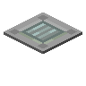
铁强化护板压力板oritech:iron_plating_pressure_plate · 方块
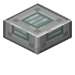
铁强化护板台阶oritech:iron_plating_slab · 方块
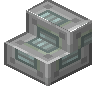
铁强化护板楼梯oritech:iron_plating_stairs · 方块
 物品筛选器
物品筛选器oritech:item_filter_block · 方块
 不透明物流管道
不透明物流管道oritech:item_pipe · 方块
 物流管道连接点
物流管道连接点oritech:item_pipe_connection · 方块
 集装物流管道
集装物流管道oritech:item_pipe_duct_block · 方块
 喷气背包
喷气背包oritech:jetpack · 物品
 强化鞘翅
强化鞘翅oritech:jetpack_elytra · 物品
 强化外骨骼鞘翅
强化外骨骼鞘翅oritech:jetpack_exo_elytra · 物品
 大型能量存储
大型能量存储oritech:large_storage_block · 方块
 末影激光器
末影激光器oritech:laser_arm_block · 方块
 熔岩发电机
熔岩发电机oritech:lava_generator_block · 方块
 低当量核爆炸装置
低当量核爆炸装置oritech:low_yield_nuke · 方块
 机器适配器插件
机器适配器插件oritech:machine_acceptor_addon · 方块
 脉冲超频插件
脉冲超频插件oritech:machine_burst_addon · 方块
 机器容量插件
机器容量插件oritech:machine_capacitor_addon · 方块
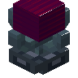
机器之心（插件）oritech:machine_combi_addon · 方块
 原始机器核心
原始机器核心oritech:machine_core_1 · 方块
 基础机器核心
基础机器核心oritech:machine_core_2 · 方块
 中级机器核心
中级机器核心oritech:machine_core_3 · 方块
 高级机器核心
高级机器核心oritech:machine_core_4 · 方块
 精良机器核心
精良机器核心oritech:machine_core_5 · 方块
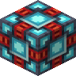
极致机器核心oritech:machine_core_6 · 方块
 终极机器核心
终极机器核心oritech:machine_core_7 · 方块?复合护板
oritech:machine_core_hidden · 方块
 效率升级插件
效率升级插件oritech:machine_efficiency_addon · 方块
 机器扩展坞
机器扩展坞oritech:machine_extender · 方块
 流体处理插件
流体处理插件oritech:machine_fluid_addon · 方块
 机器框架
机器框架oritech:machine_frame_block · 方块
 生物校位插件
生物校位插件oritech:machine_hunter_addon · 方块
 物品栏代理插件
物品栏代理插件oritech:machine_inventory_proxy_addon · 方块?机器护板
oritech:machine_plating · 物品
 铜强化护板
铜强化护板oritech:machine_plating_block · 方块
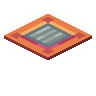
铜强化护板压力板oritech:machine_plating_pressure_plate · 方块
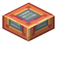
铜强化护板台阶oritech:machine_plating_slab · 方块
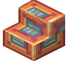
铜强化护板楼梯oritech:machine_plating_stairs · 方块
 辅助加工室插件
辅助加工室插件oritech:machine_processing_addon · 方块
 控制单元插件
控制单元插件oritech:machine_redstone_addon · 方块
 精准采集插件
精准采集插件oritech:machine_silk_touch_addon · 方块
 速度升级插件
速度升级插件oritech:machine_speed_addon · 方块
 协同矩阵插件
协同矩阵插件oritech:machine_ultimate_addon · 方块
 产量升级插件
产量升级插件oritech:machine_yield_addon · 方块
 电磁线圈
电磁线圈oritech:magnetic_coil · 物品
 工业承重柱
工业承重柱oritech:metal_beam_block · 方块
 工业承重梁
工业承重梁oritech:metal_girder_block · 方块
 马达
马达oritech:motor · 物品
 下界合金机器涂料
下界合金机器涂料oritech:netherite_paint · 物品
 镍块
镍块oritech:nickel_block · 方块镍碎块
oritech:nickel_clump · 物品
 镍粉
镍粉oritech:nickel_dust · 物品
 镍石
镍石oritech:nickel_gem · 物品
 镍锭
镍锭oritech:nickel_ingot · 物品
 镍粒
镍粒oritech:nickel_nugget · 物品
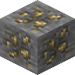
镍矿石oritech:nickel_ore · 方块
 镍强化护板
镍强化护板oritech:nickel_plating_block · 方块
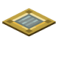
镍强化护板压力板oritech:nickel_plating_pressure_plate · 方块
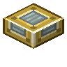
镍强化护板台阶oritech:nickel_plating_slab · 方块
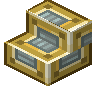
镍强化护板楼梯oritech:nickel_plating_stairs · 方块
 曼哈顿模块
曼哈顿模块oritech:nuke · 方块
 橙色机器涂料
橙色机器涂料oritech:orange_paint · 物品
 过充水晶
过充水晶oritech:overcharged_crystal · 物品
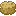
打包小麦oritech:packed_wheat · 物品
 速子吸收器
速子吸收器oritech:particle_collector_block · 方块
 管道升压器
管道升压器oritech:pipe_booster_block · 方块
 方块放置器
方块放置器oritech:placer_block · 方块
 塑料块
塑料块oritech:plastic_block · 方块
 塑料片
塑料片oritech:plastic_sheet · 物品
 铂块
铂块oritech:platinum_block · 方块
 铂碎块
铂碎块oritech:platinum_clump · 物品
 铂粉
铂粉oritech:platinum_dust · 物品
 铂石
铂石oritech:platinum_gem · 物品
 铂锭
铂锭oritech:platinum_ingot · 物品
 铂粒
铂粒oritech:platinum_nugget · 物品
 钚粉
钚粉oritech:plutonium_dust · 物品
 钚球
钚球oritech:plutonium_pellet · 物品
 石油树脂
石油树脂oritech:polymer_resin · 物品
 末影电磁炮
末影电磁炮oritech:portable_laser · 物品
 输能杆
输能杆oritech:power_pole_block · 方块
 电炉
电炉oritech:powered_furnace_block · 方块
 处理器
处理器oritech:processing_unit · 物品
 钷
钷oritech:prometheum_ingot · 物品?钷战斧
oritech:promethium_axe · 物品?钷镐
oritech:promethium_pickaxe · 物品
 磨粉机
磨粉机oritech:pulverizer_block · 方块
 电动泵
电动泵oritech:pump_block · 方块
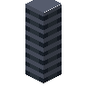
泵管oritech:pump_trunk_block · 方块
 矿场插件
矿场插件oritech:quarry_addon · 方块
 石英粉
石英粉oritech:quartz_dust · 物品
 粗有机聚合物
粗有机聚合物oritech:raw_biopolymer · 物品
 粗镍
粗镍oritech:raw_nickel · 物品
 粗镍块
粗镍块oritech:raw_nickel_block · 方块
 粗铂
粗铂oritech:raw_platinum · 物品
 粗铂块
粗铂块oritech:raw_platinum_block · 方块
 粗硅
粗硅oritech:raw_silicon · 物品
 粗铀
粗铀oritech:raw_uranium · 物品
 粗铀块
粗铀块oritech:raw_uranium_block · 方块
 反应堆冷却剂吸收器口
反应堆冷却剂吸收器口oritech:reactor_absorber_port · 方块
 反应堆热量吸收器
反应堆热量吸收器oritech:reactor_condenser · 方块
 核反应堆控制器
核反应堆控制器oritech:reactor_controller · 方块
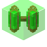
双联反应堆棒oritech:reactor_double_rod · 方块
 反应堆能量端口
反应堆能量端口oritech:reactor_energy_port · 方块
 反应堆燃料口
反应堆燃料口oritech:reactor_fuel_port · 方块
 反应堆热量管道
反应堆热量管道oritech:reactor_heat_pipe · 方块
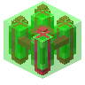
四联反应堆棒oritech:reactor_quad_rod · 方块
 反应堆红石端口
反应堆红石端口oritech:reactor_redstone_port · 方块
 反应堆中子反射器
反应堆中子反射器oritech:reactor_reflector · 方块
 单反应堆棒
单反应堆棒oritech:reactor_rod · 方块
 反应堆散热口
反应堆散热口oritech:reactor_vent · 方块
 反应堆墙
反应堆墙oritech:reactor_wall · 方块
 红石机器涂料
红石机器涂料oritech:redstone_paint · 物品
 精炼厂
精炼厂oritech:refinery_block · 方块
 精炼厂罐室模块
精炼厂罐室模块oritech:refinery_module_block · 方块
 强化碳纤维板
强化碳纤维板oritech:reinforced_carbon_sheet · 物品
 煤炭资源节点
煤炭资源节点oritech:resource_node_coal · 方块
 铜资源节点
铜资源节点oritech:resource_node_copper · 方块
 钻石资源节点
钻石资源节点oritech:resource_node_diamond · 方块
 绿宝石资源节点
绿宝石资源节点oritech:resource_node_emerald · 方块
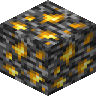
金资源节点oritech:resource_node_gold · 方块
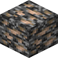
铁资源节点oritech:resource_node_iron · 方块
 青金石资源节点
青金石资源节点oritech:resource_node_lapis · 方块
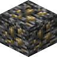
镍资源节点oritech:resource_node_nickel · 方块
 铂资源节点
铂资源节点oritech:resource_node_platinum · 方块
 红石资源节点
红石资源节点oritech:resource_node_redstone · 方块
 铀资源节点
铀资源节点oritech:resource_node_uranium · 方块
 幽匿机器涂料
幽匿机器涂料oritech:sculk_paint · 物品
 插件绞接器
插件绞接器oritech:shrinker_block · 方块
 硅
硅oritech:silicon · 物品
 硅块
硅块oritech:silicon_block · 方块
 硅晶圆
硅晶圆oritech:silicon_wafer · 物品
 赛博研究站
赛博研究站oritech:simple_augment_station · 方块铜碎末
oritech:small_copper_clump · 物品
 细铜粉
细铜粉oritech:small_copper_dust · 物品金碎末
oritech:small_gold_clump · 物品细金粉
oritech:small_gold_dust · 物品
 铁碎末
铁碎末oritech:small_iron_clump · 物品
 细铁粉
细铁粉oritech:small_iron_dust · 物品镍碎末
oritech:small_nickel_clump · 物品细镍粉
oritech:small_nickel_dust · 物品铂碎末
oritech:small_platinum_clump · 物品
 细铂粉
细铂粉oritech:small_platinum_dust · 物品细钚粉
oritech:small_plutonium_dust · 物品
 小钚球
小钚球oritech:small_plutonium_pellet · 物品
 便携能量存储
便携能量存储oritech:small_storage_block · 方块
 便携储罐
便携储罐oritech:small_tank_block · 方块
 细铀粉
细铀粉oritech:small_uranium_dust · 物品小铀球
oritech:small_uranium_pellet · 物品
 固体生物燃料
固体生物燃料oritech:solid_biofuel · 物品
 刷怪器笼
刷怪器笼oritech:spawner_cage_block · 方块
 刷怪器控制器
刷怪器控制器oritech:spawner_controller_block · 方块
 蒸汽锅炉插件
蒸汽锅炉插件oritech:steam_boiler_addon · 方块
 蒸汽机
蒸汽机oritech:steam_engine_block · 方块
 钢块
钢块oritech:steel_block · 方块
 钢粉
钢粉oritech:steel_dust · 物品
 钢锭
钢锭oritech:steel_ingot · 物品
 生物燃料
生物燃料oritech:still_biofuel_block · 方块
 生物燃料桶
生物燃料桶oritech:still_biofuel_bucket · 物品
柴油oritech:still_diesel_block · 方块柴油桶
oritech:still_diesel_bucket · 物品?oritech:still_fuel
oritech:still_fuel · 物品
涡轮燃料oritech:still_fuel_block · 方块涡轮燃料桶
oritech:still_fuel_bucket · 物品
重油oritech:still_heavy_oil_block · 方块重油桶
oritech:still_heavy_oil_bucket · 物品
矿物浆液oritech:still_mineral_slurry_block · 方块矿物浆液桶
oritech:still_mineral_slurry_bucket · 物品?oritech:still_molten_adamant
oritech:still_molten_adamant · 物品
熔融精镍oritech:still_molten_adamant_block · 方块桶装熔融精镍
oritech:still_molten_adamant_bucket · 物品?oritech:still_molten_biosteel
oritech:still_molten_biosteel · 物品
熔融有机钢oritech:still_molten_biosteel_block · 方块桶装熔融有机钢
oritech:still_molten_biosteel_bucket · 物品?oritech:still_molten_duratium
oritech:still_molten_duratium · 物品
熔融昶铂oritech:still_molten_duratium_block · 方块桶装熔融昶铂
oritech:still_molten_duratium_bucket · 物品?oritech:still_molten_energite
oritech:still_molten_energite · 物品
熔融辐镍晶oritech:still_molten_energite_block · 方块桶装熔融辐镍晶
oritech:still_molten_energite_bucket · 物品?熔融辐水晶
oritech:still_molten_fluxite · 方块
熔融辐水晶oritech:still_molten_fluxite_block · 方块桶装熔融辐水晶
oritech:still_molten_fluxite_bucket · 物品
轻石脑油oritech:still_naphtha_block · 方块
 轻石脑油桶
轻石脑油桶oritech:still_naphtha_bucket · 物品
原油oritech:still_oil_block · 方块原油桶
oritech:still_oil_bucket · 物品
地狱火oritech:still_sheol_fire_block · 方块地狱火桶
oritech:still_sheol_fire_bucket · 物品
硅清洗液oritech:still_silicon_wash_block · 方块硅清洗液桶
oritech:still_silicon_wash_bucket · 物品
蒸汽oritech:still_steam_block · 方块蒸汽桶
oritech:still_steam_bucket · 物品
奇异物质oritech:still_strange_matter_block · 方块
 奇异物质桶
奇异物质桶oritech:still_strange_matter_bucket · 物品
硫酸oritech:still_sulfuric_acid_block · 方块硫酸桶
oritech:still_sulfuric_acid_bucket · 物品?奇异物质
oritech:strange_matter · 物品
 超级AI芯片
超级AI芯片oritech:super_ai_chip · 物品
 超导体
超导体oritech:superconductor · 方块
 集装超导体
集装超导体oritech:superconductor_duct_block · 方块坍染精炼厂
oritech:tainted_refinery_block · 方块
 目标标识器
目标标识器oritech:target_designator · 物品
 工业按钮
工业按钮oritech:tech_button · 方块
 工业门
工业门oritech:tech_door · 方块
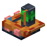
工业门oritech:tech_door_hinge · 方块
 工业拉杆
工业拉杆oritech:tech_lever · 方块
 透明物流管道
透明物流管道oritech:transparent_item_pipe · 方块
 伐木器
伐木器oritech:treefeller_block · 方块
 堕落智能
堕落智能oritech:unholy_intelligence · 物品
 薛定谔保险柜
薛定谔保险柜oritech:unstable_container · 方块
 铀晶体
铀晶体oritech:uranium_crystal · 方块
 铀粉
铀粉oritech:uranium_dust · 物品
 铀块
铀块oritech:uranium_dust_block · 方块
 铀石
铀石oritech:uranium_gem · 物品
 铀球
铀球oritech:uranium_pellet · 物品
 除草剂
除草剂oritech:weed_killer · 物品
 白色机器涂料
白色机器涂料oritech:white_paint · 物品
 灵魂之花
灵魂之花oritech:wither_crop_block · 方块
 管道扳手
管道扳手oritech:wrench · 物品